Scala Learning · recursos educativos digitales
Dos cursos que no existían esta mañana, Comunicación asertiva para Andina y Finanzas personales para Panamericana, producidos comando por comando hasta el tema 1. Y hacia dónde va esto con OVA Studio.
Noviembre de 2026 · Francisco Lizcano, arquitecto OVA
El recorrido
Qué les vamos a compartir y cómo funciona.
Once comandos en orden y qué deja cada uno.
De carpeta vacía a tema 1 compilado.
Mismo proceso, otra piel, un error de origen.
Cuatro reglas que no se mueven.
La misma cadena con botones; en curso.
En cada paso de la demo, a la izquierda va la terminal y a la derecha la pantalla de OVA Studio que hace lo mismo con botones. Esto que ven a la derecha es lo que el agente hace por dentro. Hoy se ve como texto; hacia esto va.
Lo que se comparte
motor/ instituciones/<x>/skin/ instituciones/<x>/cursos/<y>/fuente/
core.css core.js fuentes.html skin.css ova.config.js paleta.css
plantillas/*.html skin.js paleta.css logos/ contenido/*.html assets/
│ │ │
└────────────────────────┼──────────────────────────────┘
▼
node scripts/compilar.js <x>/<y>
│
┌────────────┴────────────┐
▼ ▼
cursos/<y>/dist/spa/ cursos/<y>/dist/multipagina/
una sola página (#/<id>) un .html por pantalla
entrega estándar respaldo LMS · se compara con el Word
Visto con botones
En el workspace cada curso es una carpeta con su ESTADO.md: qué insumos llegaron, qué secciones están maquetadas, si está auditado y si se entregó. Todos los comandos lo leen al empezar y lo marcan al terminar.
En la terminal, /ova-retomar lo resume y dice el siguiente comando. Aquí es la tarjeta: la institución, la fase en la que va y cuánto le falta.
Esto que ven a la derecha es lo que el agente hace por dentro. Hoy se ve como texto en la terminal; hacia esto va.
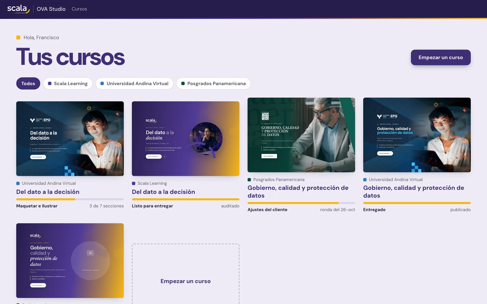
Once comandos, en orden
/ova-* y qué deja cada uno/ova-crearLa maqueta vacía de la institución.
/ova-insumosPide cada insumo, lo comprueba, lo marca.
/ova-auditar-insumosFidelidad lee el Word completo y arma el curso.
/ova-maquetarUna sección: plan, maqueta, verificadores, revisión.
/ova-ilustrarOpcional: la ilustración de apertura, si se aprueba.
/ova-compilarCompila y sirve el curso para verlo.
/ova-auditarLos dos verificadores y fidelidad sobre todo el curso.
/ova-ajustesNormaliza una ronda del cliente en una tabla.
/ova-aplicar-ajustesAplica solo las filas aprobadas.
/ova-entregarSe niega con huecos, errores abiertos o sin auditoría.
/ova-retomar se puede correr en cualquier momento: lee el ESTADO.md y dice dónde va el curso y cuál es el siguiente comando. Ninguno hace commit ni publica solo.
El comando central
/ova-maquetar en cuatro pasos, una sección por vezEl diagramador lee el Word y propone una pieza del catálogo para cada bloque. Nada se escribe hasta que el arquitecto aprueba. Cada duda se pregunta una por una.
Se escribe la pantalla con el texto literal del Word, sus negrillas en <strong> y los llamados a la acción del Word o los del catálogo.
Compila y corren dos scripts sin IA: uno coteja cada párrafo y cada negrilla del Word; el otro, cada rótulo con su pieza.
El mismo diagramador mide la pantalla a 1440 y 390 px y propone: aire, repeticiones, contraste, desbordes. Propone; no cambia nada solo.
Lo que no viene del Word, un pie o un icono, se anota en la capa editorial para que el cliente lo valide. Al final se marca el ESTADO.md: Maquetada y Diagramada con la fecha.
Paso 1 · crear
/ova-crear andina/comunicacion-asertiva› node scripts/nuevo-curso.js andina/comunicacion-asertiva Curso creado: instituciones/andina/cursos/comunicacion-asertiva Estado: instituciones/andina/cursos/comunicacion-asertiva/ESTADO.md Siguiente: /ova-insumos andina/comunicacion-asertiva (el DI, las preguntas, las imágenes, la multimedia y las descargas)
No pide el nombre del curso: el título y el subtítulo saldrán literales del Word en el paso 3. La maqueta vacía trae portada, temario, introducción, temas, evaluación y referencias con huecos.
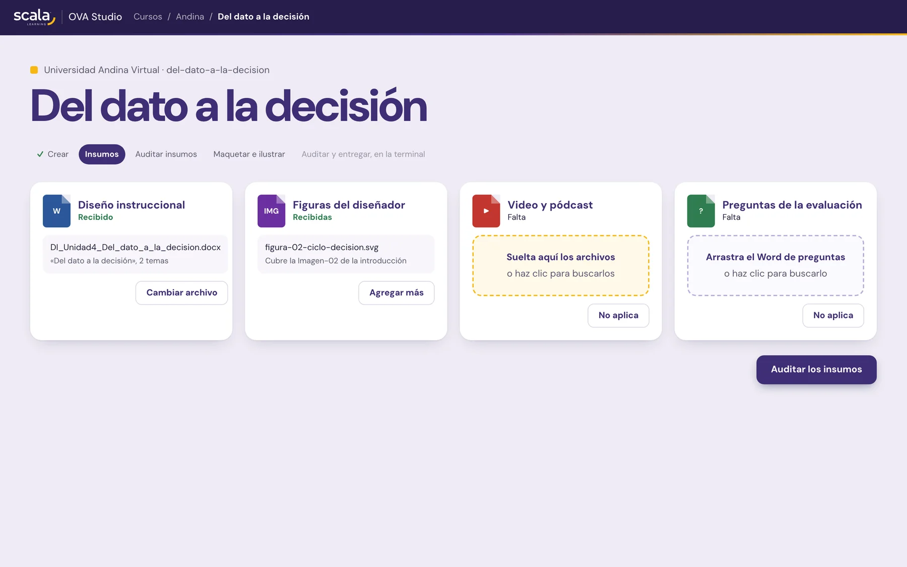
Paso 2 · insumos
/ova-insumos pide uno por uno, comprueba y marca| Insumo | Estado | Archivo | Lo que midió la comprobación |
|---|---|---|---|
| DI (Word) | cargado | di/DI-comunicacion-asertiva.docx | «Comunicación asertiva en el trabajo» · 3 temas · introducción, conclusión y referencias · 281 párrafos |
| Imágenes del diseñador | cargado | imagenes/ | 3 imágenes: Imagen-01 (portada), Imagen-02 (tema 1), Imagen-03 (tema 3) |
| Multimedia | cargado | multimedia/ | Podcast.mp3 · 95 s · video de Vimeo «Video bienvenida», 65 s, en el Word |
| Descargas | cargado | descargas/ | PDF1.pdf · 2 páginas |
| Preguntas de la evaluación | cargado | preguntas/Preguntas.docx | 44 párrafos |
Cada archivo se deja tal cual llega: nunca se edita un insumo. El comando lista los «Vincular Imagen-NN», «Vincular video» y «Vincular PDF» del Word y comprueba que cada uno tenga su archivo. Si uno no aplica, se marca con su motivo; si llega después, se vuelve a correr.
Paso 3 · auditar insumos
/ova-auditar-insumos y el curso se arma solo› fidelidad-di · modo insumos · andina/comunicacion-asertiva INSUMOS LISTOS 19 rótulos en rojo del Word, los 19 en el catálogo · 0 consultas pódcast 95 s = «1 min 35 s» del DI · PDF 2 páginas = «2 páginas» · imágenes sin texto dudas, no errores: el conductor del pódcast se presenta como de Scala Learning › node scripts/armar-curso.js andina/comunicacion-asertiva --di …/DI-comunicacion-asertiva.docx Curso: Comunicación asertiva en el trabajo Subtítulo: Asignatura - Habilidades directivas Temas (3): 1. Tres formas de responder · 2 subtemas 2. Decir que no y pedir lo que necesita · 2 subtemas 3. Dar y recibir retroalimentación · 2 subtemas Comentadas en el menú: glosario
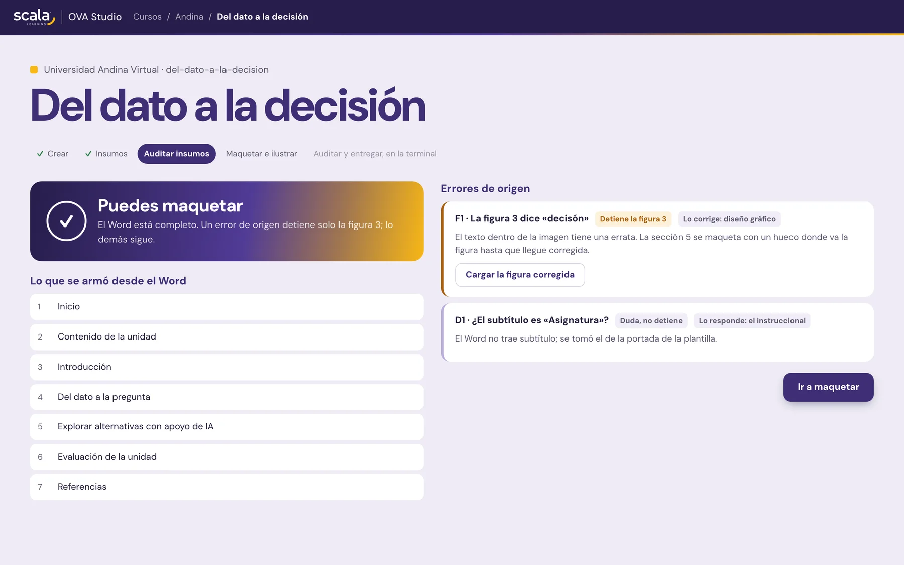
La mesa del curso
/ova-retomar dice dónde va y qué sigueRETOMAR · andina/comunicacion-asertiva
Insumos: 5 de 5 cargados · Auditoría de insumos: INSUMOS LISTOS (2026-11-09)
portada · Inicio —
temario · Contenido de la unidad —
introduccion · Introducción —
tema1 · Tres formas de responder —
tema2 · Decir que no y pedir lo que necesita —
tema3 · Dar y recibir retroalimentación —
evaluacion · Actividad formativa —
referencias · Referencias —
SIGUIENTE: /ova-maquetar andina/comunicacion-asertiva tema1
Las filas de los temas ya tienen el título del Word: las escribió armar-curso.js. Cada sección se maqueta por separado, con su propio plan y su propia revisión.
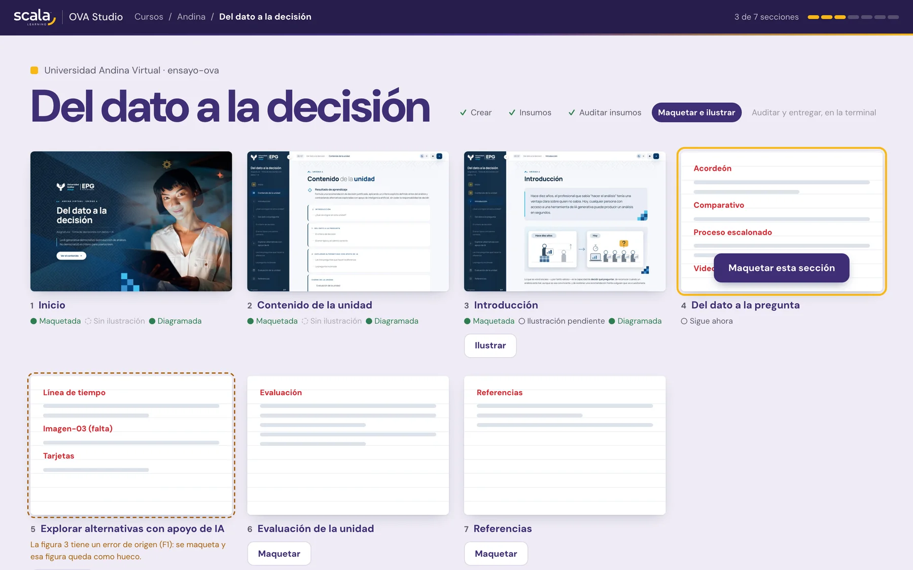
Paso 4.1 · el plan del diagramador
| Bloque del Word | Rótulo en rojo | Componente |
|---|---|---|
| «El propósito de este primer tema…» | — | Lead del encabezado |
| Vincular Imagen-02 · Pie | Foto decorativa | ova-foto-ancha |
| La respuesta de Lucía · Pregunta / Respuesta | Acordeón | ova-acordeon |
| 1.1 Pasiva, agresiva y asertiva | — | ua-seccion #tema1-1 |
| Tres respuestas al pedido del jefe de Lucía | Pestañas verticales | ova-tabs--vertical |
| Importante · «Ser asertivo no garantiza…» | Bloque destacado - fondo claro | ova-destacados |
| 1.2 Por qué cuesta ser asertivo | — | ua-seccion #tema1-2 |
| Tres creencias que frenan la asertividad | Tarjetas conectadas - clara | ova-tarjetas--claras |
| «La asertividad no consiste en ganar…» | Banner · fondo oscuro | ova-banner |
| «¿Con qué persona de su trabajo…?» | Para reflexionar | ova-callout--reflexion |
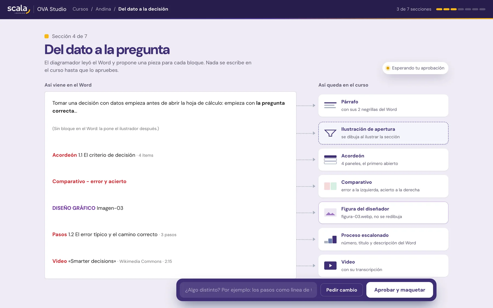
Los 7 rótulos del Word están en el catálogo: 0 consultas, 0 desviaciones. Dos preguntas de criterio, que respondió el arquitecto: solo la foto del DI como apertura, y los títulos de las pestañas sin negrilla, como el Word.
Pasos 4.2 y 4.3 · maqueta y verificadores
› python3 scripts/optimizar-figuras.py andina/comunicacion-asertiva figura-02-conversacion.png 3178 KB → figura-02-conversacion.webp 65 KB · 2000×1334 → 1600×1067 › node scripts/compilar.js andina/comunicacion-asertiva ✔ 8/8 pantallas → dist/multipagina/ + dist/spa/index.html › python3 scripts/componentes-di.py <DI> dist/multipagina --llamados ✓ Tarjetas conectadas - clara · «Tres creencias que frenan la asertividad» → ova-tarjetas--claras ✓ Banner · fondo oscuro · «La asertividad no consiste en ganar la conversación…» → ova-banner ✓ Para reflexionar · «¿Con qué persona de su trabajo suele responder…» → ova-callout--reflexion ✓ cada rótulo usa una sola pieza ✓ todos los contenedores interactivos tienen su llamado › python3 scripts/verificar-di.py <DI> dist/multipagina --editorial tema1 · 15 negrillas del Word en <strong> · 0 párrafos partidos · 0 huecos lo que falta del Word está en tema2, tema3, evaluación y referencias: aún sin maquetar
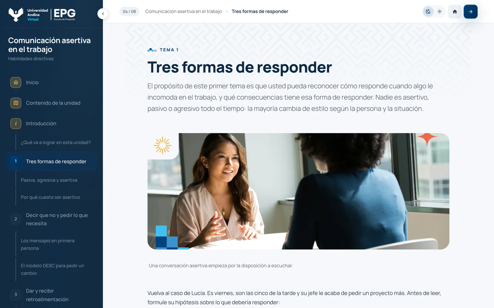
Paso 4.4 · la revisión del diagramador
› node scripts/medir-pantalla.js andina/comunicacion-asertiva tema1 18 bloques · 1 pieza gráfica · 2 interactivos · 1 banner head → 56 → foto → 56 → p → 40 → rótulo → 8 → llamado → 40 → acordeón → 84 → sección 1.1 … registro: 8 textos a 16/400 · lead 19,5/300 · banner 32/300 contraste bajo AA: ninguno · desborde a 390: ninguno ✗ en-línea: 1 · style="margin:8px 0 0" (viene de la pieza del catálogo, no de la pantalla) › diagramador · modo revisión Ninguna propuesta propia de la pantalla con una medida que la respalde. Para el arquitecto: ¿ilustración de apertura en la introducción? Para el skin de Andina (REQ): texto de tarjetas y callouts a 15,2 px → 16 px
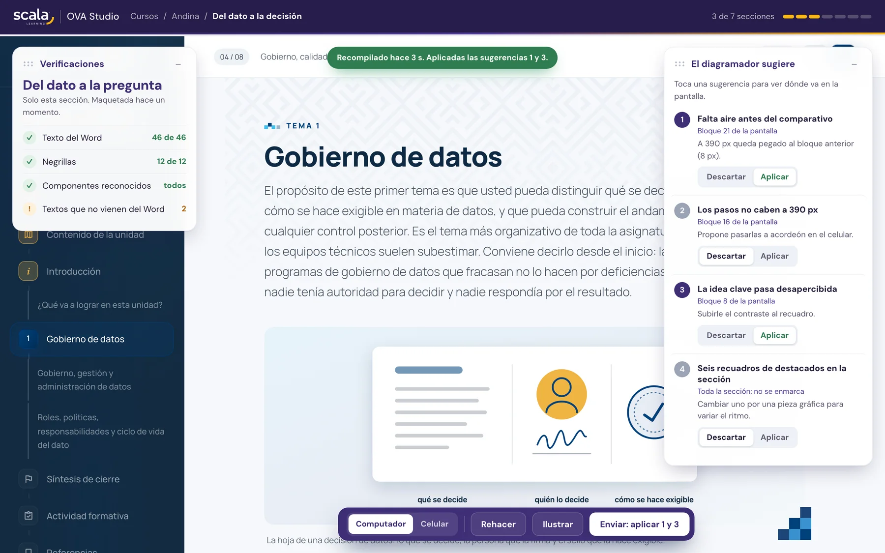
Resultado · Andina
Portada: título, subtítulo y frase destacada literales del Word; la foto es la Imagen-01 del DI.
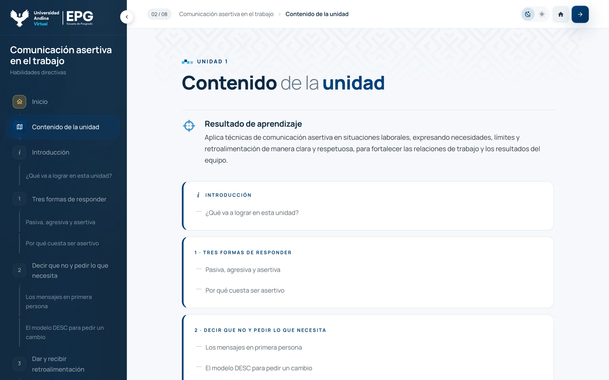
Temario: el índice sale del menú que armó el Word; el resultado de aprendizaje, literal.
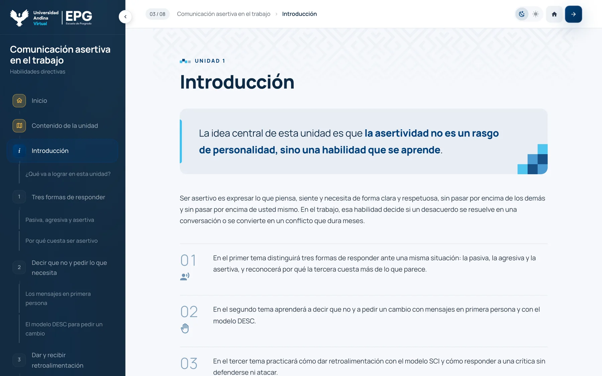
Introducción: apertura con la negrilla del Word como remate, los tres temas en lista numerada, el video del Word.
Mismo comando, otra salida
› fidelidad-di · modo insumos · upanamericana/finanzas-personales INSUMOS CON ERRORES · 2 errores comprobados en el Word · ninguno bloquea F1 · Tema 2.2 · Tabla 2 · la Nota dice que los pagos mínimos van en Necesidades, pero el desglose no los incluye y suma $10 000 exactos · Bloquea: No F2 · Referencias · «Banco de México. (s. f.). Costo Anual Total (CAT).» sin URL · Bloquea: No → insumos/ERRORES-ORIGEN-2026-11-09.md · responsable: diseño instruccional › node scripts/armar-curso.js upanamericana/finanzas-personales --di … Curso: Finanzas personales: del sueldo al presupuesto Temas (3): 1. A dónde se va tu dinero · 2. Armar un presupuesto · 3. Ahorro y deuda
El error detiene su pieza, no el curso: la Tabla 2 se maqueta literal cuando llegue el tema 2 y se reemplaza con el Word corregido. Nadie del kit toca el texto; se reporta a su responsable. Las dos filas bloquean la entrega final mientras sigan abiertas.
El plan del tema 1 · Panamericana
| Bloque del Word | Rótulo en rojo | Componente |
|---|---|---|
| ¿A dónde se fue el dinero de Diego? · Pregunta / Respuesta | Acordeón | ova-acordeon |
| Tabla 1 · Nota · Fuente | (forma de Tabla simple) | ova-apa-tabla |
| Para tener en cuenta · «Durante un mes, anota…» | Bloque destacado - fondo claro | ova-destacados |
| Cifra $21 900 · Qué mide · Etiqueta · Texto · Fuente | Bloque con Cifra destacada - clara | ova-indicador--claro |
| Tres gastos hormiga frecuentes · Imagen-02/03/04 | Tarjetas con foto | ova-mosaico |
| «Si revisas los movimientos de tu tarjeta…» | Para reflexionar | ova-callout--reflexion |
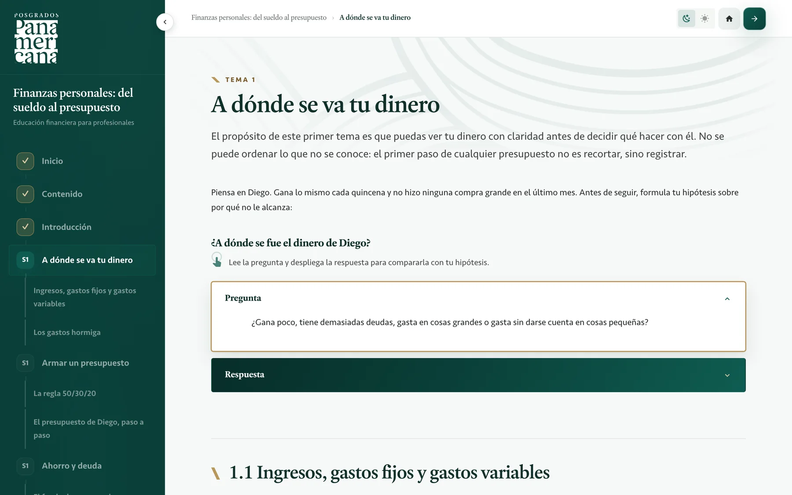
Lo que la revisión dejó para decidir: la proporción 4:5 de las tarjetas con foto frente al manual de UP, y los numerales del Word en el índice. Ninguna toca el texto.
Mismo proceso, otra piel
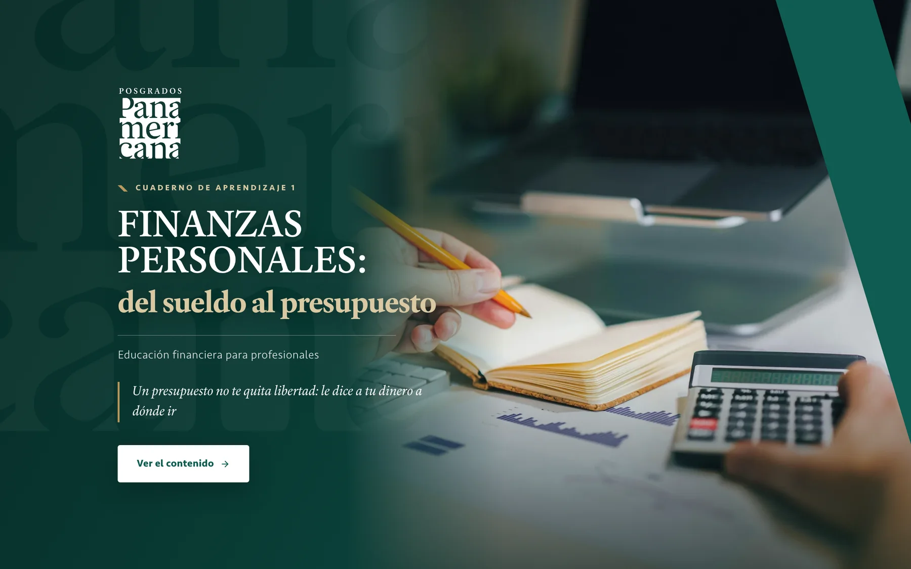
También en el celular
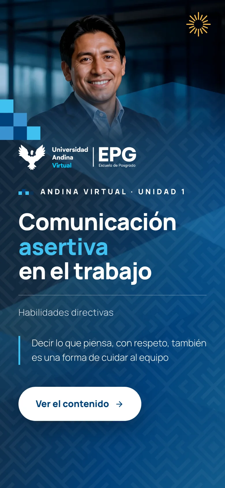
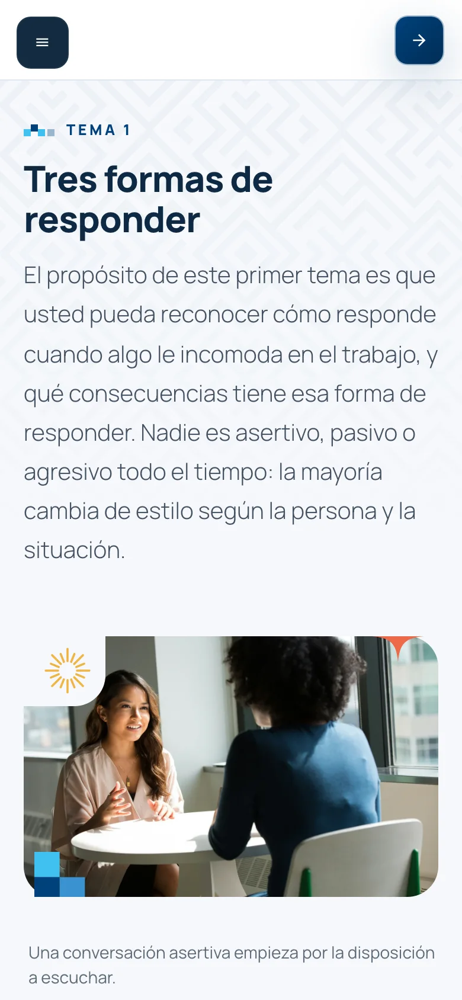
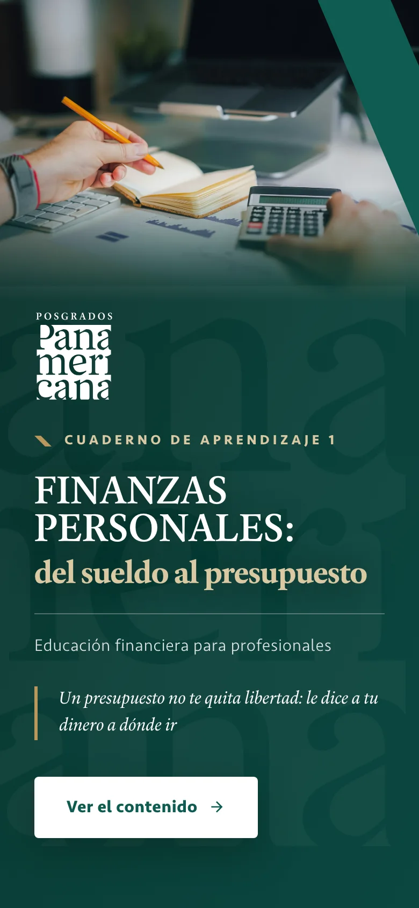
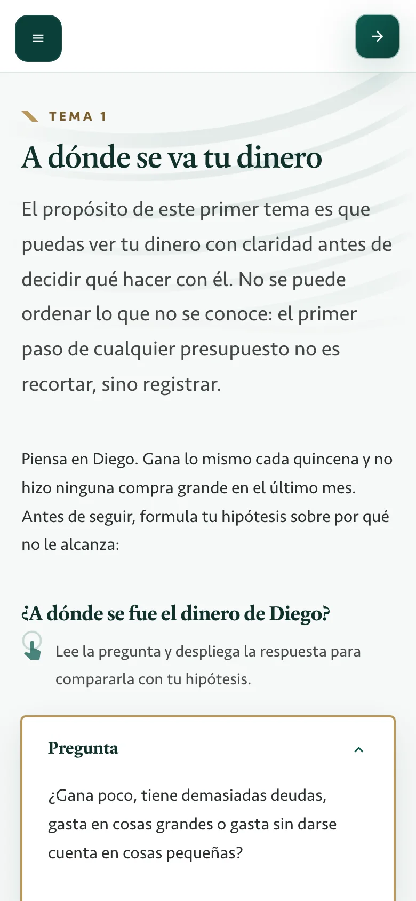
Con o sin botones
El texto del curso es el del Word, palabra por palabra. Se elige el componente, no las palabras. Los títulos de los temas y de las secciones son los del Word.
Negrilla en el Word, <strong> en el curso, sin excepción. Y ninguna negrilla que el Word no tenga: el verificador lo exige.
Un error del Word o de una figura se reporta a su responsable y detiene su pieza, no el curso. El kit nunca lo corrige.
Todo lo que no viene del Word, un pie, un icono, un alt, va a la capa editorial para que ustedes lo validen antes de la entrega.
Esto es lo que hace que el curso sea de ustedes y no de la IA. Cambia quién aprieta; no cambia lo que se respeta.
Hacia dónde va
Todo lo que fui señalando a la derecha es OVA Studio: la cadena vista desde el navegador, para quien no trabaja en la terminal.
El proceso es el mismo; cambia quién aprieta. Es un proyecto en curso y opcional.
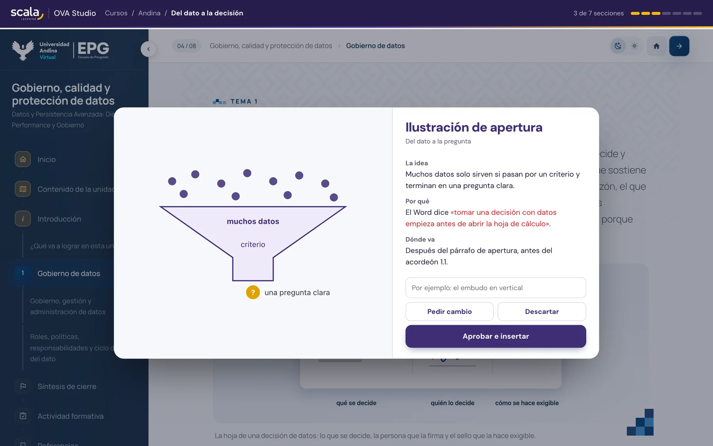
Para arrancar en su máquina
El repositorio privado del workspace, con el enlace que les enviamos, y correr bin/instalar.sh: dice qué está y qué falta.
En la raíz del workspace. Los comandos y los agentes se cargan solos con el CLAUDE.md.
/ova-retomar andina/comunicacion-asertiva: dice dónde va el curso y cuál es el siguiente comando. El LEEME tiene este arranque paso a paso.
El proceso es el mismo; cambia quién aprieta.
Quedo atento a sus preguntas